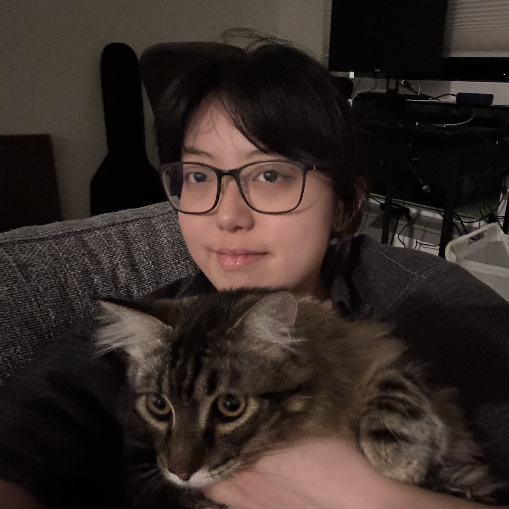

Xinyi Liu(up) and Squash
Xinyi Liu (刘鑫怡) (she/her)
Master student at University of Washington
About
I’m a graduate student at the University of Washington (UW), studying Computational Linguistics. I previously earned dual bachelor’s degrees in Psychology (BA) and Data Science (BS) from the University of Rochester. My research focuses on building and evaluating NLP systems that are reliable, interpretable, and socially responsible. Outside of research, I enjoy live music, films, and time with my cat.
- Quality and bias in claim verification corpora and evaluation
- Computational psycholinguistics & human–LM interaction
- Value Sensitive Design for AI therapy chatbots
News
- Oct 2025 Working on corpus study of real vs. synthetic claims.
- Sept 2025 Our claim verification survey accepted to EMNLP 2025 Findings.
- Dec 2024 Co-authored study on perceptions of very low nicotine content (JMIR).
Publications
Peer-reviewed
- Public Perceptions of Very Low Nicotine Content on Twitter — JMIR, 2024.
- A Systematic Survey of Claim Verification: Corpora, Systems, and Case Studies — EMNLP 2025 Findings, 2025.
Preprints & Selected
Contact
Email: xliu118uwedu